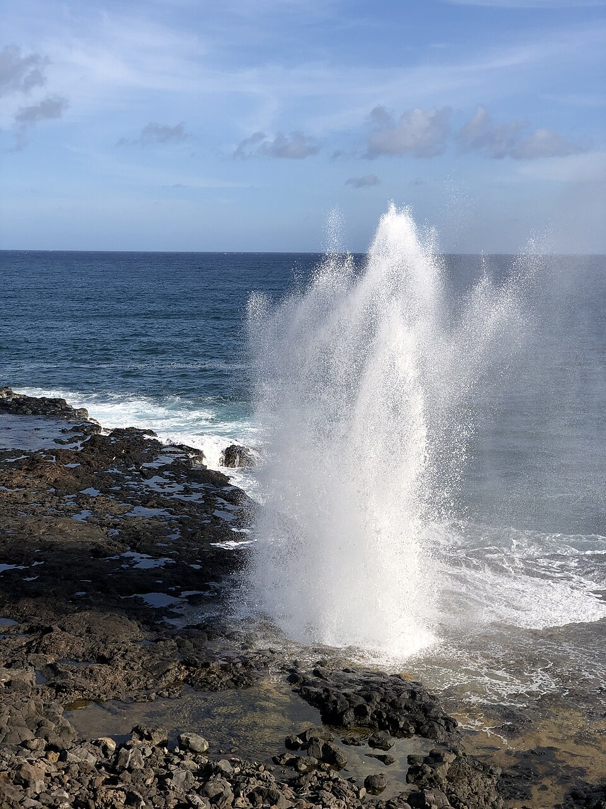

Spouting Horn
Place: Spouting Horn, Poʻipū, Kauaʻi
Type: Blowhole / coastal landmark / legendary site
Story it tells: A famous blowhole where ocean force, lava-tube geology, Hawaiian legend, and plantation-era alteration all meet on Kauaʻi's South Shore.

Spouting Horn is one of Kauaʻi's best-known natural landmarks, located along the rocky shoreline near Poʻipū on the island's South Shore. The feature was traditionally known as Puhi, a Hawaiian word meaning "blowhole" or "spouter." Western visitors later began calling it Spouting Horn, a name inspired by the horn-like shape of the spray and the deep sound that rises from the rock before each burst.
The blowhole works through a combination of lava-tube geology and wave energy. Ocean water rushes into an opening beneath the coastal shelf, where air and seawater are compressed inside a narrow volcanic chamber. When pressure builds, the water is forced upward through a small opening in the rock, sometimes shooting a plume as high as 50 feet into the air. The same compressed air creates the eerie groaning or hissing sound heard just before the spray erupts.
Hawaiian tradition explains the site through the story of Kaikapu, a giant moʻo, or lizard, who guarded the coast. According to the legend, a clever fisherman named Liko angered Kaikapu by stealing fish. As she chased him into the sea, Liko escaped through a small opening in the rocks, while the much larger moʻo became trapped inside the narrow lava tube. Her breath is said to create the plume, while her cries echo through the blowhole before each blast.
Spouting Horn once had a much larger neighbor known as the Kōloa Spouter. That blowhole reportedly sent water far higher than Spouting Horn, but it was destroyed in the early twentieth century when a nearby sugar plantation blasted it apart with dynamite. Salt spray from the larger spouter was damaging inland fields and the plantation economy took priority over preserving what the plantation considered a frustration.
That loss makes Spouting Horn even more meaningful today. It is a surviving reminder of how Hawaiʻi's landscapes were interpreted, renamed, altered, and sometimes destroyed during the plantation era. Today, visitors still hear the voice of geology and moʻolelo together: waves striking black basalt, pressure building below the surface, and Kaikapu's legendary roar rising from the stone.